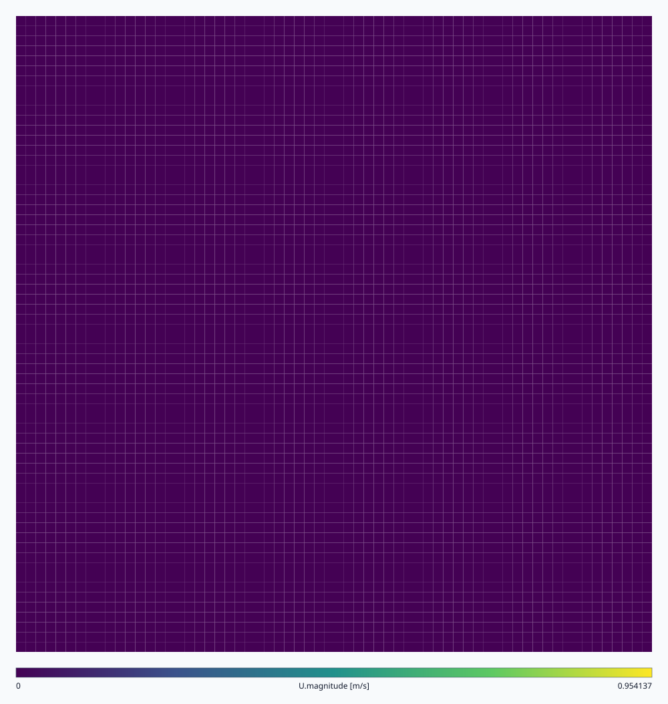
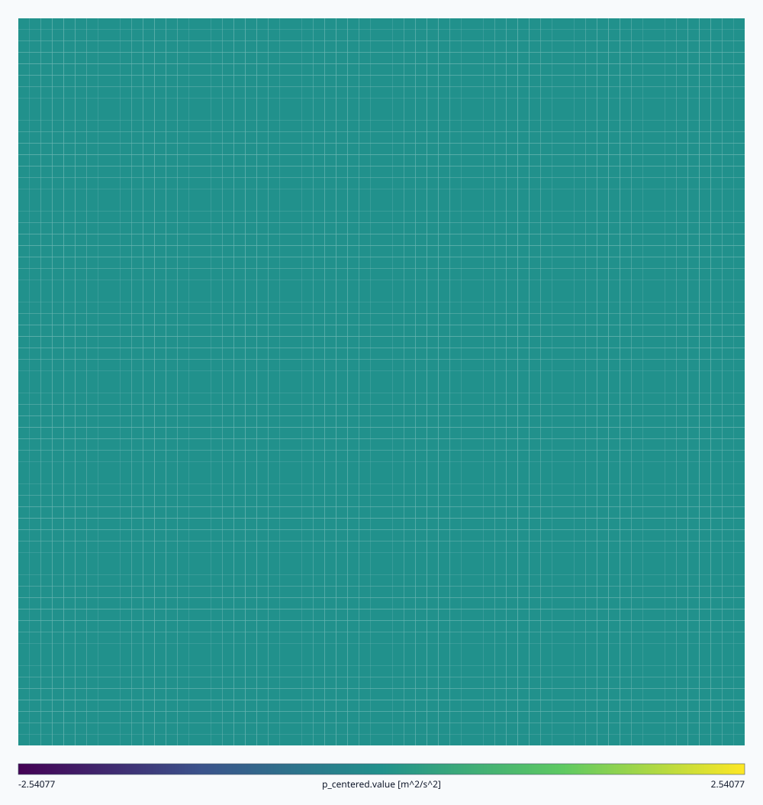
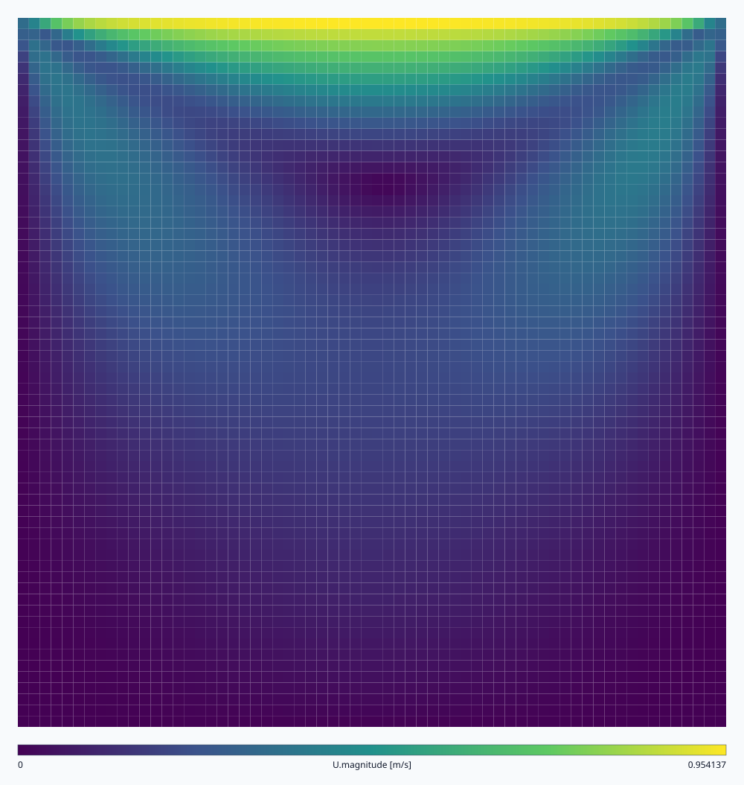
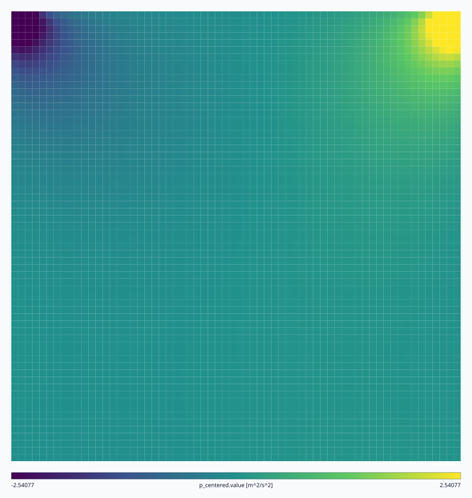
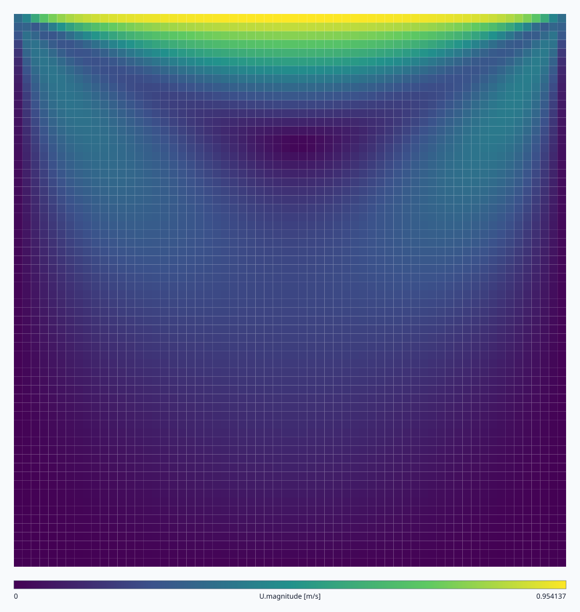

Speed — t = 0 s
Initial interior velocity.

Cell-centred fields from the 64 by 64 lid-driven cavity at the initial, middle, and final physical times. All panels use a common scale over the full trajectory. Pressure is mean-centred and its display range is clipped symmetrically at the 99th percentile; stored values remain unchanged.
Initial interior velocity.

Initial centered pressure.

The lid-driven circulation has developed.

Opposite corner extrema enforce the turn.

The low-Reynolds-number flow is near steady.

The pressure pattern is nearly settled.